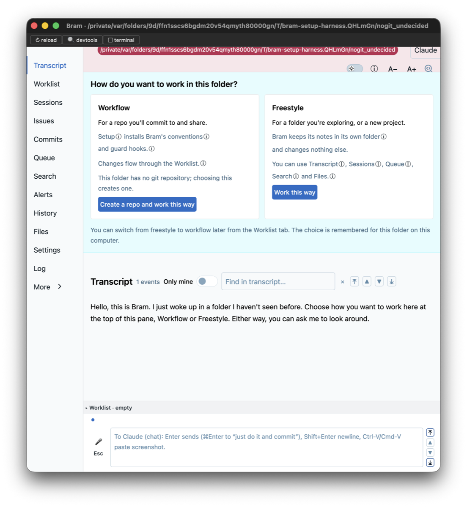
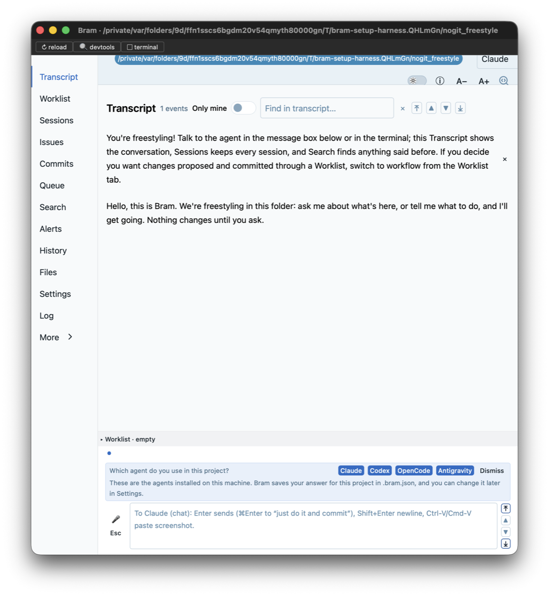
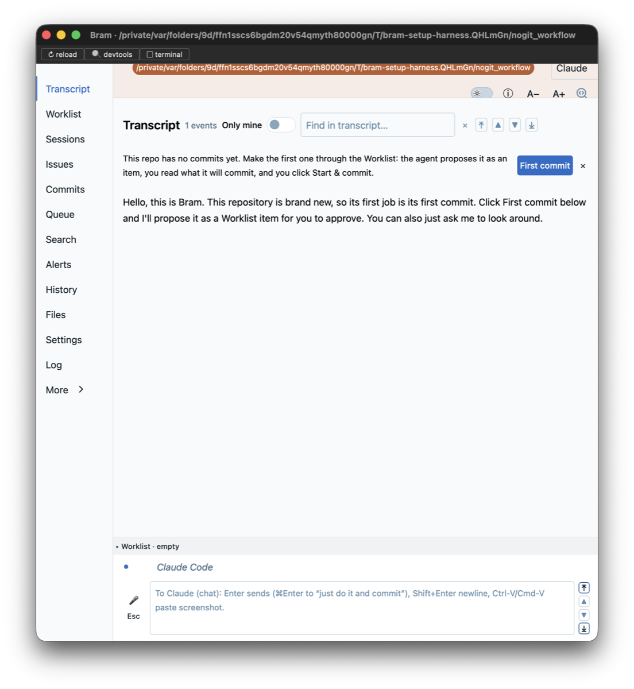
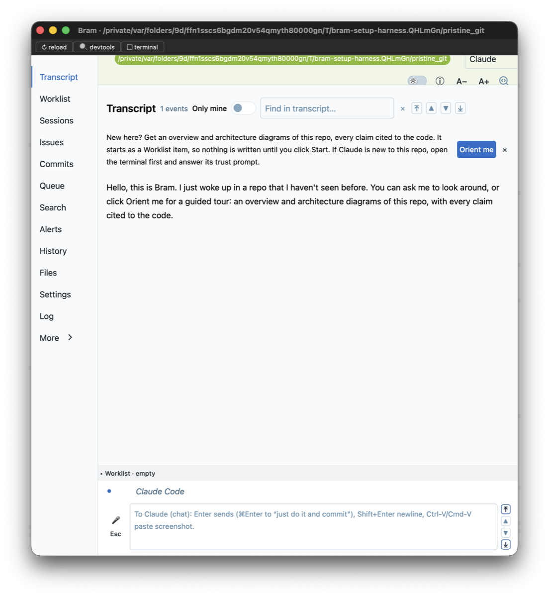
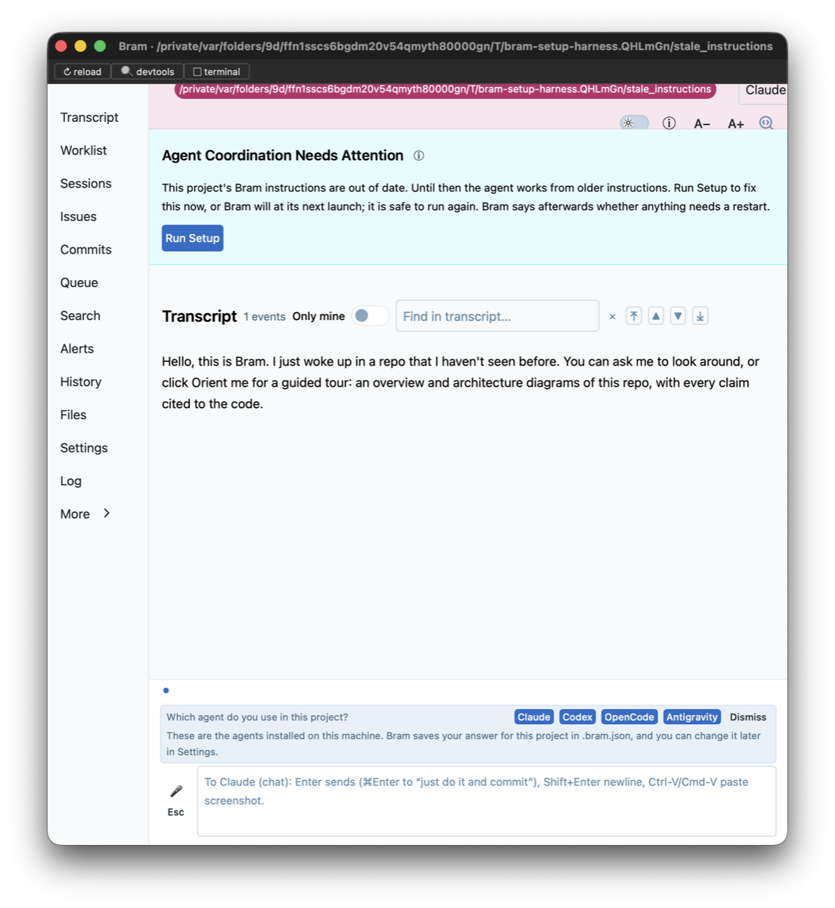
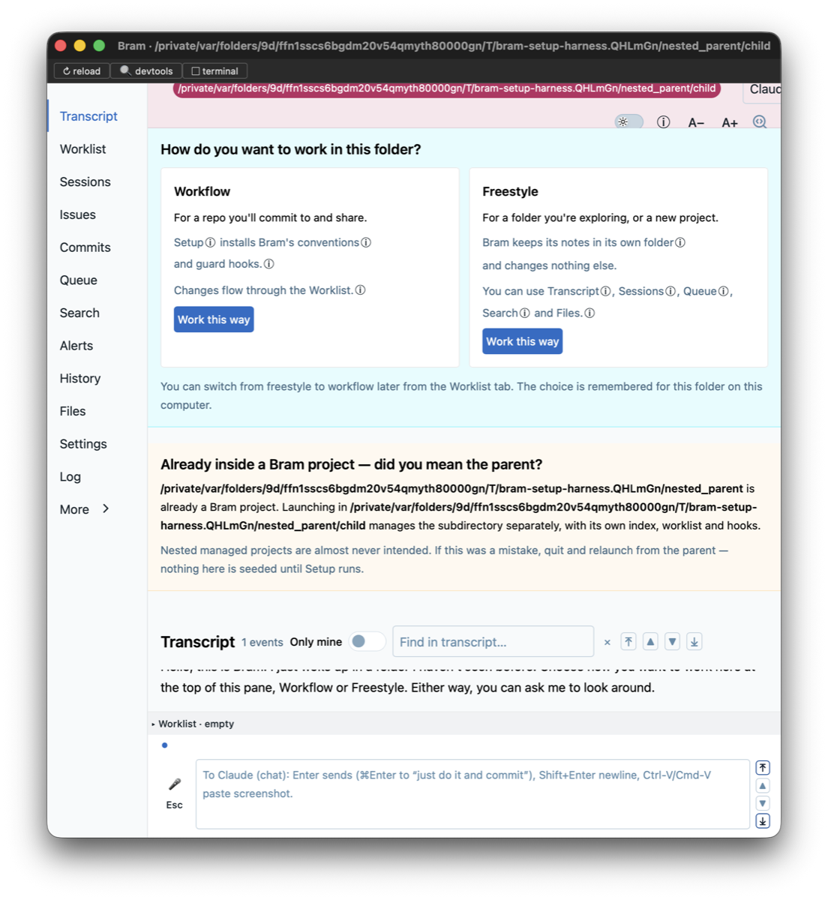
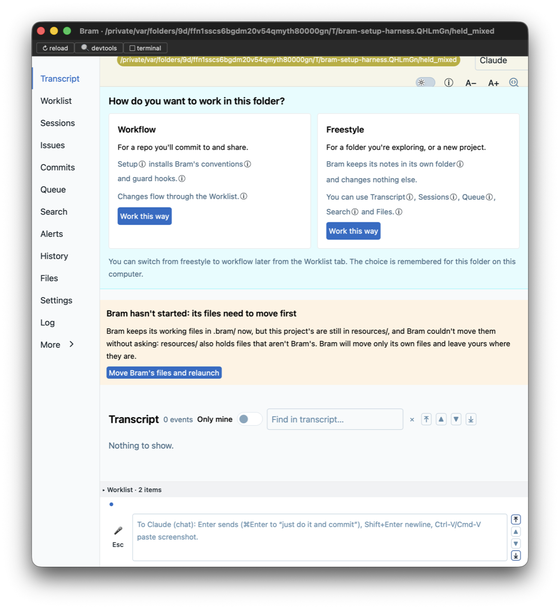
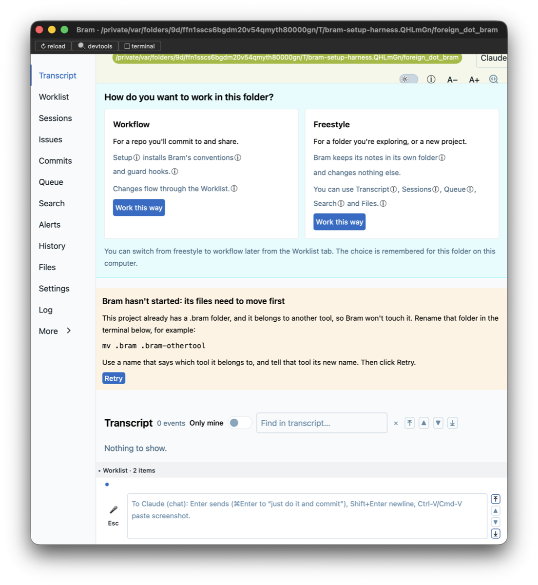

199 passed, 0 failed. Binary built Sun Nov 22 19:59:32 PST 2026. Every scenario lists its assertions; the ones that change what the pane shows carry a picture of it.

ok projectFolder.kind == not-git ok mode == undecided ok auto-setup skipped: mode undecided ok Bram's state folder exists ok no .git created by the wake ok nothing seeded in nogit_undecided ok record says none

ok projectFolder.kind == not-git ok mode == undecided ok auto-setup skipped: mode undecided ok Bram's state folder exists ok no .git created by the wake ok nothing seeded in nogit_freestyle ok record says none ok freestyle chosen, nothing ran ok mode == freestyle ok record says freestyle ok choice traced ok nothing seeded in nogit_freestyle ok still no .git ok mode == freestyle ok second launch skips Setup: freestyle ok nothing seeded in nogit_freestyle

ok projectFolder.kind == not-git ok mode == undecided ok auto-setup skipped: mode undecided ok Bram's state folder exists ok no .git created by the wake ok nothing seeded in nogit_workflow ok record says none ok workflow chosen, Setup ran ok git init ran ok git init traced ok choice traced ok mode == workflow ok modeCreatedRepo == true ok repoUnborn == true ok record says workflow ok a session postdates Setup (launched 1795408676693 > setup 1795408674908) ok seeded .bram/.worklist-authorization.json ok seeded .claude/bram-conventions.md ok seeded .claude/settings.json ok seeded AGENTS.md ok seeded CLAUDE.md ok retired Python hook absent: .claude/hooks/claude-worklist-guard.py ok retired Python hook absent: .claude/hooks/claude-permission-menu-hook.py ok bram-guard registered in settings.local.json ok no python commands in settings.local.json ok enhanced == true ok claudeNeedsSetup == false ok codexNeedsSetup == false ok opencodeNeedsSetup == false ok seeded .opencode/plugins/bram.js ok OpenCode plugin matches the bundle ok OpenCode instructions list the conventions ok antigravityNeedsSetup == false ok seeded .agents/hooks.json ok Antigravity hooks register the guard ok antigravityRulesCurrent == true ok Antigravity rules: two always-on slices within 24,000 bytes ok Antigravity rules reassemble the seeded conventions ok firstRun == false ok no machine-specific interpreter in tracked settings.json ok no stale legacy hook shims ok second Setup is byte-idempotent
ok projectFolder.kind is subfolder ok autostart held (subfolder) ok nothing written in src ok toplevel names the repo root ok nothing written at the repo root

ok auto-setup skipped on first launch: mode undecided ok mode == undecided ok nothing seeded before the choice ok mode == workflow ok lastSetup.source == mode ok a session postdates Setup (launched 1795408688727 > setup 1795408686996) ok modeCreatedRepo == false ok record says workflow ok seeded .bram/.worklist-authorization.json ok seeded .claude/bram-conventions.md ok seeded .claude/settings.json ok seeded AGENTS.md ok seeded CLAUDE.md ok retired Python hook absent: .claude/hooks/claude-worklist-guard.py ok retired Python hook absent: .claude/hooks/claude-permission-menu-hook.py ok bram-guard registered in settings.local.json ok no python commands in settings.local.json ok enhanced == true ok claudeNeedsSetup == false ok codexNeedsSetup == false ok opencodeNeedsSetup == false ok seeded .opencode/plugins/bram.js ok OpenCode plugin matches the bundle ok OpenCode instructions list the conventions ok antigravityNeedsSetup == false ok seeded .agents/hooks.json ok Antigravity hooks register the guard ok antigravityRulesCurrent == true ok Antigravity rules: two always-on slices within 24,000 bytes ok Antigravity rules reassemble the seeded conventions ok firstRun == false ok no machine-specific interpreter in tracked settings.json ok no stale legacy hook shims ok no tracked files modified by Setup ok orientation playbook seeded ok orientation template seeded ok template copied unstamped ok second Setup is byte-idempotent
ok re-running Setup leaves the tree clean ok firstRun == false ok claudeNeedsSetup == false ok mode == workflow ok record says none

ok claudeNeedsSetup == false ok claudeNeedsSetup == true ok claudeDocsCurrent == false ok menuHookRegistered == true ok setupReasons names stale instructions only
ok activeProvider == antigravity ok antigravityNeedsSetup == false ok providerNeedsSetup == false ok setupReasons empty when Antigravity setup is current ok antigravityNeedsSetup == true ok providerNeedsSetup == true ok antigravityHooks == missing ok setupReasons names missing Antigravity hook group ok antigravityRulesCurrent == false ok setupReasons names missing hook group and stale rules ok antigravityNeedsSetup == false ok providerNeedsSetup == false
ok seeded .bram/.worklist-authorization.json ok seeded .claude/bram-conventions.md ok seeded .claude/settings.json ok seeded AGENTS.md ok seeded CLAUDE.md ok retired Python hook absent: .claude/hooks/claude-worklist-guard.py ok retired Python hook absent: .claude/hooks/claude-permission-menu-hook.py ok bram-guard registered in settings.local.json ok no python commands in settings.local.json ok enhanced == true ok claudeNeedsSetup == false ok codexNeedsSetup == false ok opencodeNeedsSetup == false ok seeded .opencode/plugins/bram.js ok OpenCode plugin matches the bundle ok OpenCode instructions list the conventions ok antigravityNeedsSetup == false ok seeded .agents/hooks.json ok Antigravity hooks register the guard ok antigravityRulesCurrent == true ok Antigravity rules: two always-on slices within 24,000 bytes ok Antigravity rules reassemble the seeded conventions ok firstRun == false ok no machine-specific interpreter in tracked settings.json ok no stale legacy hook shims

ok nestedUnder reported (/private/var/folders/9d/ffn1sscs6bgdm20v54qmyth80000gn/T/bram-setup-harness.QHLmGn/nested_parent) ok auto-setup skipped on nested launch ok nested launch not seeded

ok projectFolder.kind is state-held ok obstacle is mixed ok autostart held (state-held) ok hold recorded in .git/bram/state-hold.log ok a state write is refused with 409 held=mixed ok the refusal is on stderr ok nothing written (port, trace, Setup) ok resources/ byte-identical ok tracked tree unchanged ok no .bram/ created ok the held board reads from resources/ ok retry asks for the move answer
ok resources/ moved away ok .bram/ carries .migrated-from ok board moved into .bram/ ok traces op=moved ok projectFolder.kind is ok

ok projectFolder.kind is state-held ok obstacle is foreign-dot-bram ok autostart held (state-held) ok hold recorded in .git/bram/state-hold.log ok a state write is refused with 409 held=foreign-dot-bram ok the refusal is on stderr ok nothing written (port, trace, Setup) ok resources/ byte-identical ok tracked tree unchanged ok no .gitignore or .migrated-from written into .bram/ ok .bram/ contents unchanged ok state-dir plan reports foreignDotBram
ok projectFolder.kind is state-held ok obstacle is foreign-dot-bram ok autostart held (state-held) ok hold recorded in .git/bram/state-hold.log ok a state write is refused with 409 held=foreign-dot-bram ok the refusal is on stderr ok nothing written (port, trace, Setup) ok resources/ byte-identical ok tracked tree unchanged ok no .gitignore or .migrated-from written into .bram/ ok .bram/ contents unchanged ok state-dir plan reports foreignDotBram